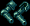

声波（Agorawave）是 Outlands 的元素精通（Aspect Mastery）之一，其特性围绕范围（AoE）法术与移动法阵（Moving Field）展开。该元素的特殊特效名为「织焰者（Flameweaver）」，可对周围最多 8 格内的怪物造成范围法术伤害，命中目标越多，总伤害越高。在武器与魔法书上，声波元素会强化法术伤害与法力返还；在护甲上则强化护甲值、法术伤害（对 AoE 与法阵法术翻倍）、移动法阵距离，以及施法期间的伤害减免。
激活声波元素武器后，提供以下加成（数值随玩家的声波阶位等级提升）：
| 加成项 | 数值（随玩家声波阶位） |
|---|---|
| 近战命中加成 (Melee Accuracy Bonus) | 10% + 每阶位 2% |
| 战术加成 (Tactics Bonus) | 10 + 每阶位 2 |
| 元素特殊触发几率 (Aspect Special Chance，随武器速度缩放) | 0.5% + 每阶位 0.05% |
特殊特效 织焰者（Flameweaver）：对 8 格范围内的怪物造成（1250 + 125 × 阶位等级）点伤害，由范围内的怪物均摊；命中的目标总数每多 1 个，总伤害提升 10%。
激活声波元素魔法书后，提供以下加成（数值随玩家的声波阶位等级提升）：
| 加成项 | 数值（随玩家声波阶位） |
|---|---|
| 法力返还几率 (Mana Refund Chance) | 10% + 每阶位 2% |
| 伤害加成 (Damage Bonus) | 10% + 每阶位 2% |
| 元素特殊触发几率 (Aspect Special Chance，随法术环缩放) | 4% + 每阶位 0.4% |
特殊特效同样为 织焰者（Flameweaver）（数值与武器特效一致）：对 8 格范围内的怪物造成（1250 + 125 × 阶位等级）点伤害均摊，命中目标越多总伤害越高。

激活声波元素护甲后，提供以下加成（数值随玩家的声波阶位等级提升）：
| 加成项 | 数值（随玩家声波阶位） |
|---|---|
| 护甲值加成 (Armor Rating Bonus) | 20% + 每阶位 5% |
| 法术伤害加成 (Spell Damage Bonus，对 AoE 与法阵法术翻倍) | 9% + 每阶位 3% |
| 移动法阵距离 (Moving Field Distance) | 7 + 每 4 阶位 +1 |
| 施法期间减伤 (Damage Resistance While Casting) | 7.5% + 每阶位 2.5% |
当玩家穿着声波元素护甲时，施放的流星雨（Meteor Swarm）、连锁闪电（Chain Lightning）与地震（Earthquake）法术只会伤害怪物，而不会伤害任何玩家或随从（包括在 PvP 中也如此）。
法术伤害提升（9% + 3% × 阶位等级）的常规数值；对于任意 AoE 法术（含流星雨、连锁闪电、地震）以及任意移动法阵（含火焰法阵 Fire Field、毒气法阵 Poison Field、麻痹法阵 Paralyze Field），该伤害加成会翻倍。
由火焰法阵、毒气法阵、麻痹法阵法术所创建的移动法阵的行进距离为（7 + 每 4 个阶位 +1）。
玩家在施法动作进行期间（即施法动画播放时）会获得伤害减免。
声波元素在 PvP 中的表现如下：
| 状态 | 效果 |
|---|---|
| 禁用 (Deactivated) | 无变化 (No Changes) |
| 激活 (Activated) | 无变化 (No Changes) |